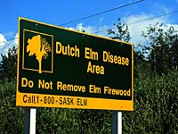

Dwarf Mistletoe
Western Gall Rust
Armillaria Root Rot
Dutch Elm Disease

There are many tree diseases in Saskatchewan, ranging from the seemingly insignificant to the alarmingly virulent. Thankfully, some of the worst tree diseases have not found a foothold in Saskatchewan. However, there are some serious diseases which are frequent, and it is important to be aware of them. |
The major tree diseases common in Saskatchewan are:
- Dwarf Mistletoe
- Western Gall Rust
- Armillaria Root Rot
- Dutch Elm Disease
Dwarf Mistletoe
Many strains of this disease attack a host of tree species. Lodgepole
and jack pine are hardest hit in Saskatchewan. Infected trees
form dense, thick branches called "witches brooms".
Repeated attacks can eventually kill the tree. Selective harvesting removes the host branch or tree, killing
the mistletoe plant. Chemical and biological controls are being
tested for use in high-value forests.
Western Gall Rust
This common disease spread by spores, causes easily seen swellings
(galls) on the stems and branches of lodgepole, jack, Scots, and
other pines. Outbreaks seldom kill trees but result in a misshapen
look, stunted growth and weak main stems which are easily damaged.
Harvesting will reduce numbers of infected trees.
Armillaria Root Rot
This rot is caused by a parasitic fungus commonly infecting conifers
of all ages. Affected trees become less vigorous, then foliage
yellows and the tree eventually dies. Armillaria affects both
live and dead trees and is spread by spores and through root systems. Planting healthy, resistant trees, adding lime to the soil and
applying selected chemicals can help control this disease.
 Dutch Elm Disease (DED) is a fatal disease which can affect any elm tree. Even though it was first introduced from Europe around 1930, Saskatchewan had remained free of the disease until 1990. It is now widespread to the east and south of Saskatchewan and could be a serious threat to cultivated and native elms if allowed to spread. |
DED is caused by a fungus and is spread from one elm tree to another by elm bark beetles. The fungus clogs the treeís water conducting system, causing the leaves to wilt and the tree to die, usually within one or two seasons. The beetles breed under the bark of the dead or dying elm wood. As a new generation of infected adult beetles emerges and begins to feed on healthy trees, the disease spreads.
You may be able to spot the disease early. The symptoms appear from the latter half of June to the middle of August. Look for
- leaves on one or more branches that are wilted, drooped, or curled.
- the damaged leaves to turn brown, but remain on the tree.
- brown streaks in the sapwood (seen by removing the bark of infected twigs).
The disease can be prevented by keeping elm trees healthy, vigorous and properly pruned. Red dust is a sign of the elm bark beetle, so watch for this on the lower portion of the treeís trunk in the fall or early spring. In the summer, look for wilting leaves. Confirmed diseased trees should be cut down and burned. DED can be carried on firewood. A good way to prevent the disease is to not bring firewood into the province. |